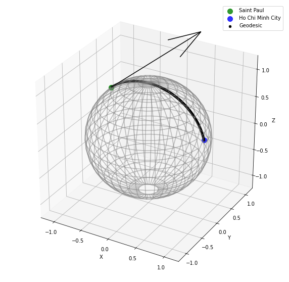
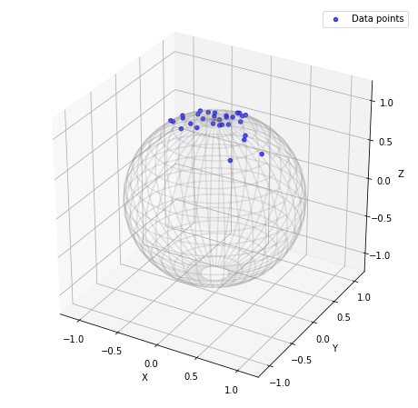
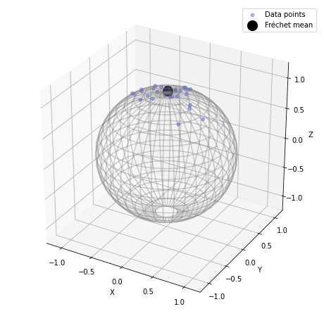

Chapter 2 Statistics on Riemannian Manifold
2.1 Riemannian Manifold
An important property that an \(n-\)manifold \(\mathcal{M}\) has is that it is compact (by defninition) and is metricizable (Urysohn’s theorem). In this section, we want to construct a metric for an abstract manifold whose properties allow us to do calculus. Recall that the tangent space is \(\mathcal{M}\) is homeomorphic to \(\mathbb{R}^n\), we define Riemannian metric as one that maps a vector in the tangent space to its norm (essentially quantify the vector):
Definition Let \(T_p\mathcal{M}\) be the tangent space of a point \(p\) in an differentiable manifold \(\mathcal{M}\subset \mathbb{R}^n\). The Riemannian manifold is defined as the topological space on \(\mathcal{M}\) induced by the Riemannian metric \(\rho\) by: \[ \begin{aligned} \langle ., .\rangle_p: T_p\mathcal{M}\times T_p\mathcal{M} &\rightarrow \mathbb{R}\\ \vec{\mathbf{v}} &\longmapsto \sqrt{\langle \vec{\mathbf{v}},\vec{\mathbf{v}} \rangle_p}\\ \end{aligned} \] Recall that in a plane, there many way that we can go from one point to another, but the shortest path is a straight line. We want to construct similar idea on the manifold is defined through curve and geodesics. A curve on a manifold is a path that connects 2 arbitrary point on \(\mathcal{M}\) (i.e. how can we go from one point to another). The geodesics between 2 arbitrary point on a manifold is simply the shortest curve containing those 2.
Definition A curve in \(\mathcal{M}\) is defined as \(\gamma: [0,1]\to \mathcal{M}\) such that \(\gamma\) is differentiable. The length of a curve is defined as \[L(\gamma) = \int_0^1 \sqrt{\langle \gamma(t)^{'} \rangle_{\gamma(t)}} dt\]
Definition The geodesics between arbitrary \(x,y\in\mathcal{M}\) is given by the metric \(\rho: \mathcal{M}\times \mathcal{M} \to \mathbb{R}\): \[ \rho(x,y) = \inf\{L(\gamma) \vert \gamma(0) = x, \gamma(1) = y)\} \]
Equipped together, (\(\mathcal{M},\rho\)) is a Rienmannian manifold. Figure below visualize a tangent vector at the point Saint Paul and a geodesics between Saint Paul and Ho Chi Minh City on a sphere.
Figure 2.1: The geodesics between Saint Paul and Ho Chi Minh City on Earth!2.2 Instrinsic moments
In order to give rigorous definition about probability in a manifold domain, there are quite several concepts in measure theory we need to be aware of. In general, a probability space \((\Omega,\mathcal{F},\mathcal{P})\) consists of 3 elements:
Sample space \(\Omega\): the set of all possible outcome.
Event space \(\mathcal{F}\): the collection of events, each event is a set of outcome in the sample space
Probability measure \(\mathcal{P}:\mathcal{F}\to[0,1]\) a function define the probability of events (which have satisfy a few axioms)
Since this is quite out of scope to this project (which can be read more about in this link), we can simply think of the point of defining probability space \((\Omega,\mathcal{F},\mathbb{P})\) is to “do” statistics in usual probability theory we have seen in class. For the purpose of this project, we assume the probability space are complete, a random variable would take places in \((\mathcal{M},\mathcal{B})\) where \(\mathcal{M}\) is complete Rienmannian manifold \(\mathcal{B}\) is the Borel \(\sigma-\)algebra generated by the topology induced by Rienmannian metric \(\rho\). For an abstract manifold, there are many ways we can define a “mean” such as intrinsic mean and extrinsic mean. Though for a Riemannian manifold with geodesic metric, we only focus on the intrinsic mean and variance.
Definition Fréchet moments Let \((\mathcal{M},\rho)\) be abstract Riemannian manifold space with measure \(\mu\). The Fréchet mean and variance are defined respectively as: \[\Theta^2 =\arg\inf_{p\in\mathcal{M}}\int_\mathcal{M} \rho(x,p)^2 d\mu(x)\] \[\sigma^2 =\inf_{p\in\mathcal{M}}\int_\mathcal{M} \rho(x,p)^2 d\mu(x)\] It is worth to point out that \(\Theta^2\) is a collection of Fréchet mean as the Fréchet mean is not guaranteed or unique in an abstract manifold. Although since the Riemannian manifold is a Hilbert space, there exists a unique global argument of the infimum so \(\Theta^2\) is a singleton.Here, if we replace the domain \(\mathcal{M}\)with \(\mathbb{R}^n\), then it is our usual understanding of expectation!
Definition: Sample Fréchet mean and variance Let there be finite collection of \(n\) random variables \(\mathcal{X}_i: \Omega\to\mathcal{M}\), the sample Fréchet mean and variance is defined as: \[\hat{\Theta}^2 = \arg\min_{p\in\mathcal{M}} \frac{1}{n}\sum_{i=1}^n \rho^2(\mathcal{X}_i,p)\] \[\hat\sigma^2 = \min_{p\in\mathcal{M}} \frac{1}{n}\sum_{i=1}^n \rho^2(\mathcal{X}_i,p)\] By changing the geodesics metric with Eucledian metric for elements in \(\mathbb{R}^2\), we simply arrive at the sample mean and variance we typically seen! We need to prove that \(\hat\mu_F\) and \(\hat\sigma_F\) exist for \((\mathcal{M},\rho)\) that is complete.
Proof Let \(X = \{x_1,x_2,\dots,x_n\}\subset\mathcal{M}\) be a finite collection of \(n\) points on a complete Riemannian space \((\mathcal{M},\rho)\). Let \(\mathcal{f}: \mathcal{M} \to \mathbb{R}\) be given by \[\mathcal{f}(m) = \sum_{i=1}^n \rho^2(m,x_i)\] It is sufficient to show that \(\mathcal{f}(m)\) achieves a minimum. Let \(\epsilon = \max\{\rho(x_i,x_j)\vert i\neq j\}\) be the maximum distance, consider the finite union of closed \(\rho-\)ball cenetered at \(x_i\) \(\bar{B}_\rho(\epsilon,x_i)\) for all \(x_i\in X\): \[C = \bigcup_{i=1}^n \bar{B}_\rho(\epsilon,x_i)\] It follows that \(C\) is a closed and bounded subset of the complete metric space \(\mathcal{M}\), which implies \(C\) is compact. For arbitrary \(x\in C\) and \(\varepsilon >0\) arbitrary, let there be an open Eucledian ball \(B_d(\varepsilon,\mathcal{f}(x))\) of \(\mathcal{f}(x)\). Then \(\mathcal{f}^{-1}(B_d(\varepsilon,\mathcal{f}(x))\) is an neighborhood of \(x\) in \(\mathcal{M}\), pick \(\delta > 0\) such that \(\delta < \epsilon\).
For arbitrary \(m'\in \mathcal{f}^{-1}(B_d(\varepsilon,\mathcal{f}(x))\), the open ball \(B_\rho(\delta,m')\subset \mathcal{f}^{-1}(B_d(\varepsilon,\mathcal{f}(x)))\) so pre-image of open Eucledian ball is open in \(\mathcal{M}\). Thus, \(f\) is continuous, by Extreme Value Theorem, the \(\mathcal{f}\) has a global minimum.
 
Figure 2.2: The sample Frechet mean on a \(2-\)sphere.2.3 Asymtomtic behavior
Theorem Almost surely convergence of Fréchet mean and variance For probability space \((\Omega,\mathcal{F},\mathcal{P})\) and complete Rimennian metric space \((\mathcal{M},\rho)\), suppose there are finite sequence of \(n\) independent and identically distributed random variable (iid r.v.) \(\mathcal{X}_i:\Omega\to\mathcal{M}\) for \(i=1,2,\dots,n\). It follows that: \[ \begin{aligned} &\lim\sup\hat\Theta^2\subseteq\Theta^2 \text{ }\text{ }\text{ }\text{ }\text{ }\text{ }\text{ and }\text{ }\text{ }\text{ }\text{ }\text{ }\text{ } \hat\sigma^2_n \to \sigma^2 \end{aligned} \] Proof Let there be complete Rimennian metric space \((\mathcal{M},\rho)\) and probability space \((\Omega,\mathcal{F},\mathcal{P})\) and measure \(\mu\). For arbitrary \(n\) i.i.d r.v. \(\{\mathcal{X}_i\}_{i=1,2,\dots, n}\). Define the sequence of function \(F\) and \(F^\ast\): \[ \begin{aligned} &F_n(z) = \frac{1}{n}\sum_{i=1}^n \rho^2(z,\mathcal{X_i}) - \int_\mathcal{M}\rho^2(z,x)d\mu(x) \\ &F^\ast_n(z) = \frac{1}{n}\sum_{i=1}^n \rho^2(z,\mathcal{X_i}) - \int_\mathcal{M}\rho^2(\Theta,x)d\mu(x) \\ \end{aligned} \] Since \(F_n(z)\) is a random variable on the real domain, by Strong Law of Large number, for arbitrary \(z\in\mathcal{M}\) it follows that: \[\lim_{n\to\infty} F_n(z) =0\] Since \((F_n)_{n\in\mathbb{N}}\) uniformly converges, by compactness of \(\mathcal{M}\): \[\lim_{n\to\infty}\sup_{z'\in\mathcal{M}} F_n(z') =0 \implies\lim_{n\to\infty}F_n(\hat\Theta_n) =0\] Since \(\Theta\) is the greatest upper bound and \(\hat\Theta_n\) (\(\forall n\in\mathbb{N}\)) is the global minimum of the domain, it follows that \(\hat\Theta_n\leq \Theta\) (\(\forall n\in\mathbb{N}\)). Then: \[ \begin{aligned} F_n(\hat\Theta_n) &= \frac{1}{n}\sum_{i=1}^n \rho^2(\hat\Theta_n,\mathcal{X_i}) - \int_\mathcal{M}\rho^2(\hat\Theta_n,x)d\mu(x) \\ &\leq \frac{1}{n}\sum_{i=1}^n \rho^2(\hat\Theta_n,\mathcal{X_i}) - \int_\mathcal{M}\rho^2(\Theta,x)d\mu(x) \\ &= F^\ast_n(\hat\Theta_n)\\ F^\ast_n(\hat\Theta_n) &= \frac{1}{n}\sum_{i=1}^n \rho^2(\hat\Theta_n,\mathcal{X_i}) - \int_\mathcal{M}\rho^2(\Theta,x)d\mu(x) \\ &\leq \frac{1}{n}\sum_{i=1}^n \rho^2(\Theta,\mathcal{X_i}) - \int_\mathcal{M}\rho^2(\Theta,x)d\mu(x) \\ &= F_n(\Theta) \end{aligned} \] \[\implies F_n(\hat\Theta_n)\leq F^\ast_n(\hat\Theta_n) \leq F_n(\Theta)\] Define \(K_n = \max\{|F_n(\hat\Theta_n)|,|F_n(\Theta)|\}\) then: \[ \begin{cases} \lim_{n\to\infty}K_n = 0\\ |F^\ast_n(\hat\Theta_n)| \leq K_n \end{cases} \implies \lim_{n\to\infty}|F^\ast_n(\hat\Theta_n)| =0 \implies \hat \sigma^2\to\sigma^2 \] Thus, the Fréchet variance is almost surely convergence (a.s.), and it’s left to prove the Fréchet expectation is also a.s.. For arbitrary \(n\in\mathbb{N}\), define the subset \(\mathcal{C}_n\subset\mathcal{M}\) as \[\mathcal{C}_n = \text{Closure}\left(\bigcup_{m=n}^\infty \hat\Theta^2_m\right)\] We will prove \(C_n = \hat\Theta^2_n\) by inclusion both way. Let \(n\in\mathbb{N}\) and \(c_j\in\mathcal{C}_n\) be arbitrary. Since \(\mathcal{C}_n\) is closed, by compactness of \(\mathcal{M}\), there exists a subsequence \((c_{j_k})\subset \mathcal{C}_{n_k}\) such that \(c_{j_k} \to c_j\). Then \(c_j\in\lim_{n\to\infty}\sup_{j\geq n} \mathcal{C}_n \implies c_j\in \lim\sup\hat\Theta^2_n\), which implies \(C_n\subseteq\lim\sup\hat\Theta^2_n\). Now for the converse, let \(c_j\in\lim\sup\hat\Theta_n\) be arbitrary. By definition, for every \(\epsilon>0\), there exists subsequence \((c_{j_k})\subset\mathcal{C}_{n_k}\) satisfying \(c_{j_k}\to c_j\). Then \(c_j\in\text{Closure}(\bigcup_{m=n}^\infty\hat\Theta^2_m)\), so \(\lim\sup\hat\Theta^2_n\subseteq\mathcal{C}_n\). By inclusion both way, \(\lim\sup\hat\Theta^2_n=\text{Closure}\left(\bigcup_{m=n}^\infty \hat\Theta^2_m\right)\)
Let \(\hat\theta\in\lim\sup\hat\Theta^2_n\) be arbitrary then \(\hat\theta\in\text{Closure}\left(\bigcup_{m=n}^\infty \hat\Theta^2_m\right)\). By compactness of \(\mathcal{M}\), there exists a convergent subsequence \((\hat\theta_k)\) such that \(\hat\theta_k\to\hat\theta\). Thus, we can make \(\rho^2(\hat\theta_k,\hat\theta)\) as mall as we want. Pick \(N_k \in \mathbb{N}\) such that \(N_k\geq \frac{1}{\varepsilon}\) for \(\varepsilon>0\), so whenever \(k\geq N_k\) it must be that \(\rho^2(\hat\theta_k,\hat\theta) \leq \frac{1}{k}\). By Minkowski inequality in \(L^2\) space, we have:
\[ \begin{aligned} \left(\frac{1}{N_k}\sum_{i=1}^{N_k}\rho^2(\mathcal{X}_i,\hat\theta)\right)^{1/2} &\leq \left(\frac{1}{N_k}\sum_{i=1}^{N_k}\rho^2(\mathcal{X}_i,\hat\theta_k)\right)^{1/2} + \left(\frac{1}{N_k}\sum_{i=1}^{N_k}\rho^2(\hat\theta_k,\hat\theta)\right)^{1/2}\\ &\leq \left(\frac{1}{N_k}\sum_{i=1}^{N_k}\rho^2(\mathcal{X}_i,\hat\theta_k)\right)^{1/2} + \left(\frac{1}{N_k}N_k(\frac{1}{k})^2\right)^{1/2}\\ &\leq \left(\frac{1}{N_k}\sum_{i=1}^{N_k}\rho^2(\mathcal{X}_i,\hat\theta_k)\right)^{1/2} + \frac{1}{k}\\ \implies \lim\inf_{k\to\infty}\left(\frac{1}{N_k}\sum_{i=1}^{N_k}\rho^2(\mathcal{X}_i,\hat\theta)\right)^{1/2} &\leq \lim\inf_{k\to\infty}\left(\frac{1}{N_k}\sum_{i=1}^{N_k}\rho^2(\mathcal{X}_i,\hat\theta_k)\right)^{1/2} + \lim\inf_{k\to\infty}\frac{1}{k} \\ \implies \mathbb{E}\left[\rho^2(\mathcal{M},\hat\theta)\right]^{1/2} &\leq \lim\inf_{k\to\infty}\left(\frac{1}{N_k}\sum_{i=1}^{N_k}\rho^2(\mathcal{X}_i,\hat\theta_k)\right)^{1/2} + 0\\ &\leq \lim\inf_{k\to\infty}\left(\frac{1}{N_k}\sum_{i=1}^{N_k}\rho^2(\mathcal{X}_i,z')\right)^{1/2} (\forall z'\in\mathcal{M})\\ &\leq \mathbb{E}\left[\rho^2(\mathcal{M},z')\right]^{1/2} \\ \implies \mathbb{E}\left[\rho^2(\mathcal{M},\hat\theta)\right] &\leq \mathbb{E}\left[\rho^2(\mathcal{M},z')\right]\\ \implies \hat\theta \in \Theta^2 &\implies \lim\sup\hat\Theta_n\subseteq\hat\Theta \end{aligned} \] Thus, the sample Fretchet mean and variance is Almost surely converges.
2.4 Normal distribution
There is not a general Normal distribution defined on an abstract manifold, so the following definition of normal density function only applies to the Riemannian manifold.
Definition For a Riemannian manifold \((\mathcal{M},\rho)\), the probability density function for normal distribution is \(\mathcal{Pr}:(\mathcal{M},\mu,\tau)\to[0,1]\) defined by: \[ \begin{aligned} \mathcal{Pr}(x\vert\mu,\tau) &= \frac{1}{C(\mu,\tau)}e^{-\frac{\tau}{2}\rho(\mu,x)^2} \\ \text{Where :}&\\ C(\mu,\tau) &= \int_\mathcal{M}e^{-\frac{\tau}{2}\rho(\mu,x)^2}dx \\ &\text{ is a normalized term.} \end{aligned} \] A random variable \(\mathcal{X}\) of \((\mathcal{M},\rho)\) follows a Riemannian normal distribution is denoted as \(\mathcal{X}\sim\text{N}_\mathcal{M}(\mu,\tau^{-1})\). The figures below shows the sampling on \(\text{N}_\mathcal{M}(0,1)\), respectively, at \(n=30,100,1000\). We can see that it shares some similar symmetrical dispersion property pn the domain as sampling normal distribution on \(\mathbb{R}\). Another interesting result is that the central limit theorem on Riemannian also holds!Definition Central limit theorem Let \(\mathcal{Y}_1,\mathcal{Y}_2,\mathcal{Y}_3,\dots,\mathcal{Y}_n\) be \(n\) independent random variable from the same distribution (same parameters) then \[\sqrt{n} (\mathcal{Y}_1+\mathcal{Y}_2+\dots+\mathcal{Y}_n)\longrightarrow_\rho\text{N}_\mathcal{M}(\vec{0},\tau^{-1})\] The proof of this theorem deserves a project of its own! Look’s at how interesting the statistical theories on the Riemannian manifold intutively similar to the \(\mathbb{R}^n\)!